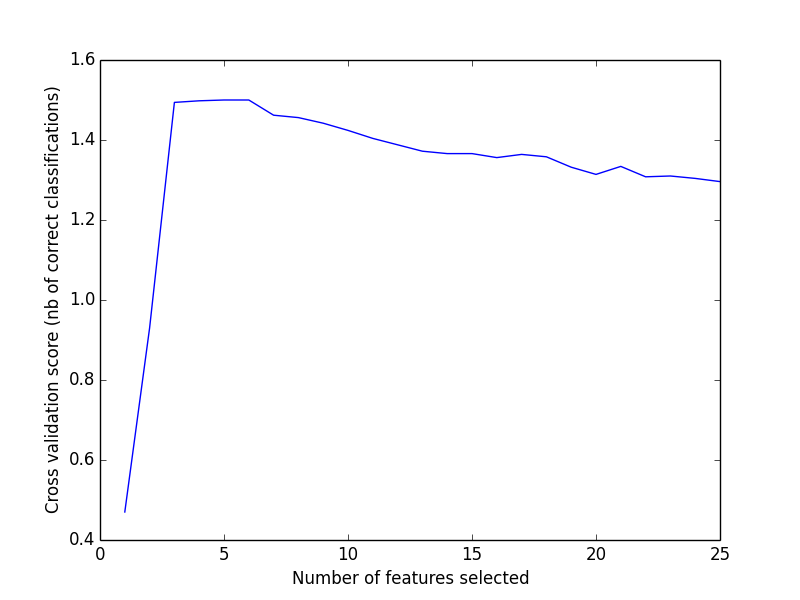

Recursive feature elimination with cross-validation¶
A recursive feature elimination example with automatic tuning of the number of features selected with cross-validation.
Script output:
Optimal number of features : 5
Python source code: plot_rfe_with_cross_validation.py
print(__doc__)
from sklearn.svm import SVC
from sklearn.cross_validation import StratifiedKFold
from sklearn.feature_selection import RFECV
from sklearn.datasets import make_classification
# Build a classification task using 3 informative features
X, y = make_classification(n_samples=1000, n_features=25, n_informative=3,
n_redundant=2, n_repeated=0, n_classes=8,
n_clusters_per_class=1, random_state=0)
# Create the RFE object and compute a cross-validated score.
svc = SVC(kernel="linear")
# The "accuracy" scoring is proportional to the number of correct
# classifications
rfecv = RFECV(estimator=svc, step=1, cv=StratifiedKFold(y, 2),
scoring='accuracy')
rfecv.fit(X, y)
print("Optimal number of features : %d" % rfecv.n_features_)
# Plot number of features VS. cross-validation scores
import pylab as pl
pl.figure()
pl.xlabel("Number of features selected")
pl.ylabel("Cross validation score (nb of correct classifications)")
pl.plot(range(1, len(rfecv.grid_scores_) + 1), rfecv.grid_scores_)
pl.show()
Total running time of the example: 3.28 seconds ( 0 minutes 3.28 seconds)